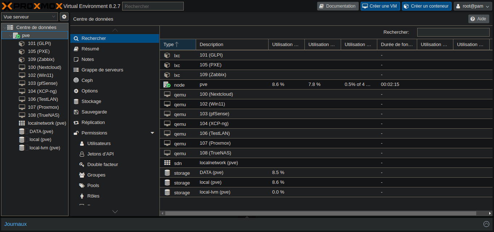
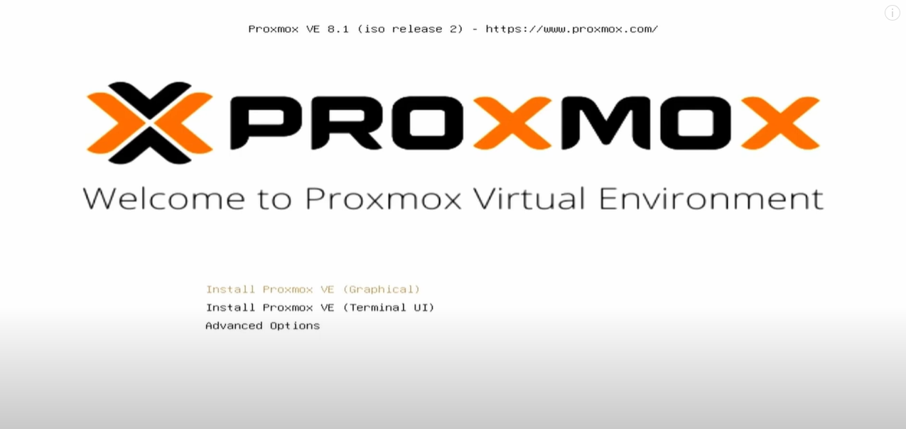
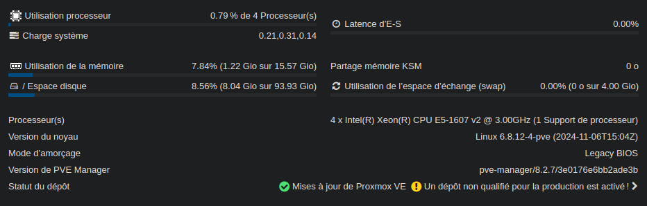
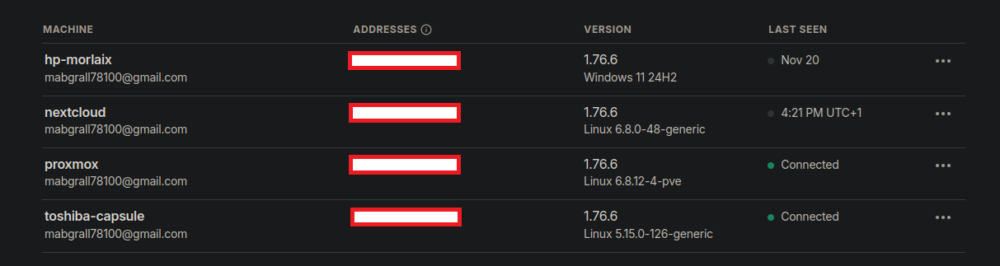
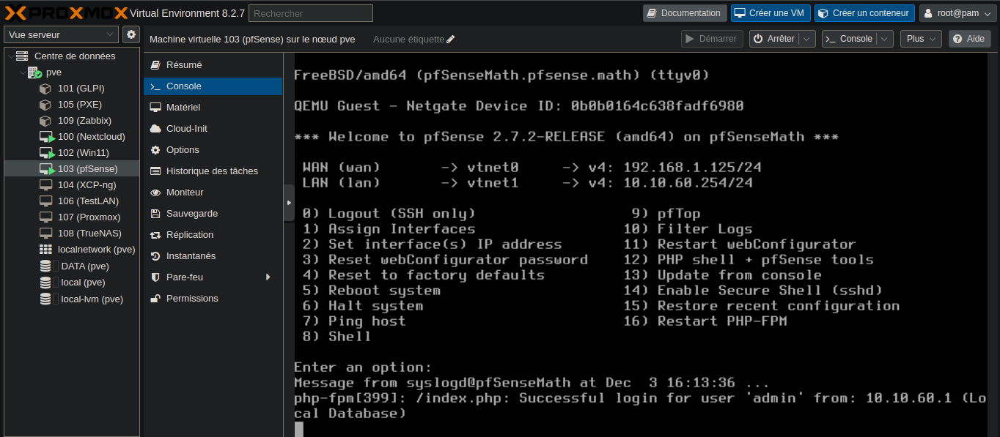
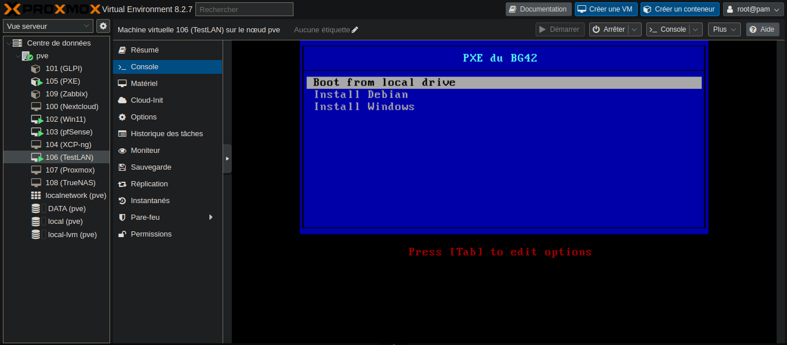
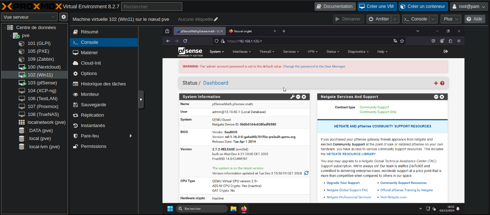
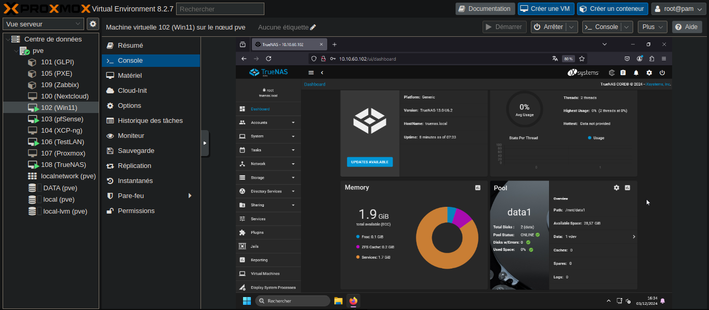
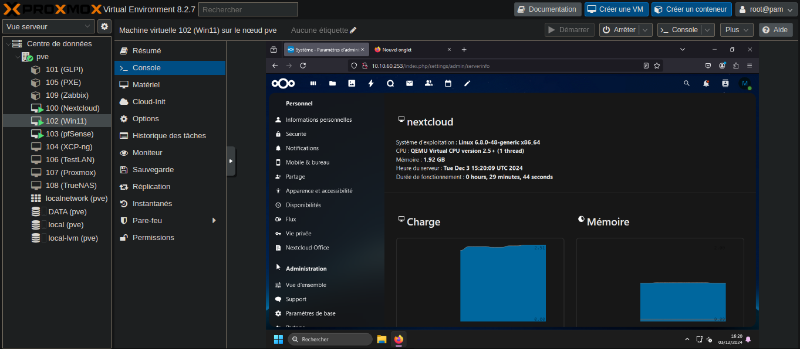

Présentation du projet
Le projet consiste à déployer une infrastructure de virtualisation avec Proxmox VE (Virtual Environment),
une solution open source permettant de gérer des machines virtuelles (KVM) et des conteneurs (LXC).
Objectifs du projet :
Installation de Proxmox sur un serveur physique
Création de VMs variées (pfSense pour firewall/routeur, serveur PXE, Windows, Linux)
Mise en place d’un serveur PXE en conteneur LXC
Ce projet permet d’acquérir des compétences en virtualisation, administration réseau,
gestion de conteneurs et déploiement automatisé de systèmes.

1. Installation de Proxmox VE
Téléchargement de l’ISO de Proxmox depuis le site officiel
Utilisation d'une clef bootable ventoy
Démarrage du serveur sur la clef et lancer l'installation
Configurer le clavier, le mot de passe root, l’adresse IP statique et le nom d’hôte
Valider et lancer l’installation
Redémarrer le serveur après avori retiré la clef
Accéder à l’interface web via l'adresse ip suivie du port 8006
Dans mon cas l'adresse du Proxmox était https://192.168.1.124:8006, la session utilisateur était mabgrall avec un mot de passe fort

2. Configuration initiale de Proxmox
Configuration du stockage pour accueillir les VMs et conteneurs
Mettre en place un bridge réseau vmbr0 pour que les VMs soient accessibles sur le réseau local
Création d'un réseau LAN virtuel isolé
Mettre à jour Proxmox et installation d'un service VPN (Tailscale)


3. Création des machines virtuelles
Création d’une VM pfSense
Uploader l'ISO PfSense sur le stockage Proxmox
Configuration CPU, RAM, disque, interfaces réseau (au moins deux : WAN et LAN)
Installation pfSense via l’interface de la VM

Création d’un conteneur PXE
Télécharger un template LXC Linux compatible (Debian dans mon cas)
Créaion d'un conteneur LXC via l’interface Proxmox
Installation des services PXE dans ce conteneur (TFTP, DHCP, NFS/HTTP)
Configuration du réseau pour que le conteneur soit accessible et serve les clients PXE

Avantages du conteneur : léger, partage le noyau avec l’hôte, moins gourmand en ressources qu'une VM normale
Création de VM Clientes Windows et Linux
Upload des ISO sur le stockage Proxmox
Création des VM via l’interface Proxmox
Installation des systèmes

Autres Machines
TrueNAS
NextCloud
GLPi
Accès aux interfaces web


Ce projet permet de maîtriser l’installation et la gestion d’une infrastructure virtualisée complète avec Proxmox, tout en découvrant les spécificités des VMs et des conteneurs, ainsi que la mise en place de services réseau essentiels comme pfSense et PXE.